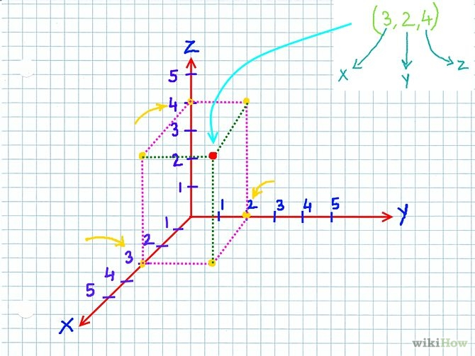

CMPT 202
Lab 2: Java Fundamentals
Objectives
The objectives of this lab are:
* To review the Java language
* To use methods in the math API
* To design and run unit tests
* To apply some principles of
programming and software engineering
Before Proceeding
Review the Programming
Grading Guidelines for ideas as how to
properly write Java programs.
The Lab
The following image represents a 3-dimensional point with an x, y,
and z coordinate:

Design a class named ThreeDimensionalPoint
that represents a 3 dimensional point that has a specified x, y, and
z coordinate. These coordinates should be stored as double .
(1) Specifically, provide two constructors:
- a default constructor that sets
the origin at (0,0,0)
- a constructor that allows the (x,y,z) coordinates to be specified.
(2) A getter for the x, y, and z coordinates:
-
getX(), getY(), getZ()
The following steps require implementing specific methods. For each
of these methods, first write the stub of the method (i.e. it just
compiles, but provides no functionality) then write an appropriate
unit test. You should initially fail your unit tests. Next,
implement the method. Repeat this process for each of the six
methods. This is the process behind test-driven development (TDD).
(3) Provide three methods that allow the specified point to be
shifted by a specified amount along any of the three axis:
- double shiftX(double amount)
- double shiftY(double
amount)
- double shiftZ(double
amount)
In all three instances, each method returns the new position of
either the x, y, or z coordinate.
(4) Provide three methods that will allow the rotation of a point by
a specified angle around a specified axis. This will require a bit
of trigonometry:
Look in the Java API on how to use the sin() and cos() methods.
(They are simple and easy to use.)
These three methods will have the signature
- void rotateX(double theta)
- void rotateY(double theta)
- void rotateZ(double theta)
When you write these unit tests, you will likely need to perform
some of the math using a calculator to first determine what the
correct values of x, y, and z are following a rotation. You will
also have to think about the value of delta for
the assertEquals()
where you are asserting two double values have the same value. (The
delta value is the threshold you are allowing the two
variables to vary where you still assert they are equals. For
example, if v1 = 5.45
and v2 = 5.5
and epsilon = .05,
assertEquals(v1,v2,epsilon)
will return true.)
Lab Handin
Upload your ThreeDimensionalPoint.java as well as your unit
tests to Canvas. Each member in the group needs to
submit the Java files to Canvas.
The title of your submission should be the names of
everyone in your group. The message in the message box should be
your rating of your partner.
Unless you worked alone, everyone should rate their
partner(s) in the Canvas message box. Your partner should be rated
on a scale of 5-100, based on the following questions: Your
partner should be rated on a scale of 5-100, based on the
following questions:
1. Did your partner read preparatory materials
before coming to the scheduled lab? (1-20)
2. Did your partner do his or her fair share
of the work? (1-20)
3. Did your partner cooperatively follow the
pair programming model (rotating roles of driver and navigator)?
(1-20)
4. Did your partner make contributions to the
completion of the lab assignment? (1-20)
5. Did your partner cooperate? (1-20)
If you were completely satisfied with the process, you
should give your partner a score of 100. If you were not satisfied
with the process, please provide a breakdown of your partner's
rating, and elaborate (in as much detail as you wish) on your
experience.